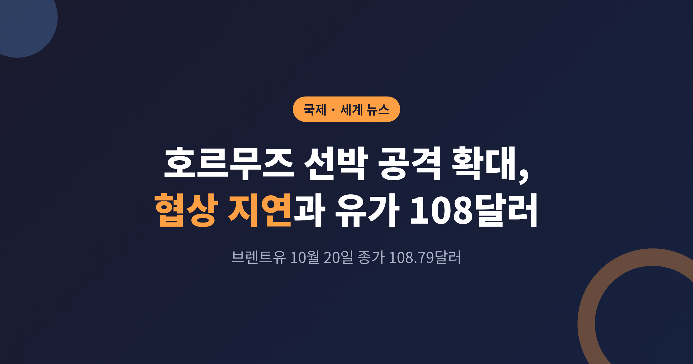
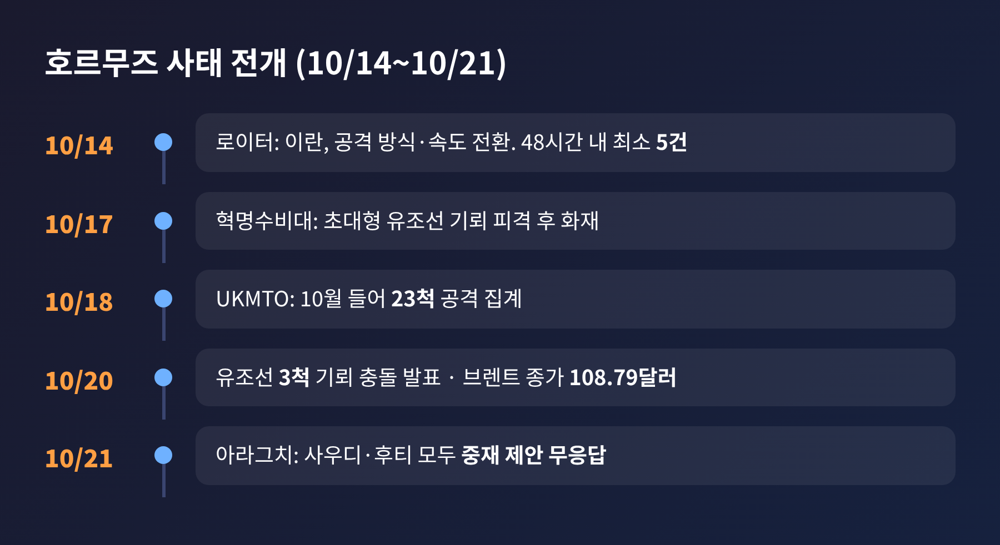
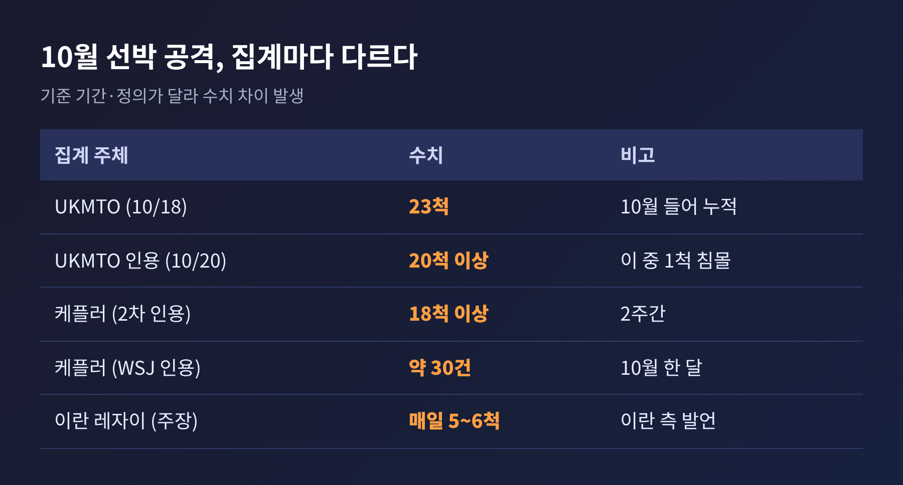
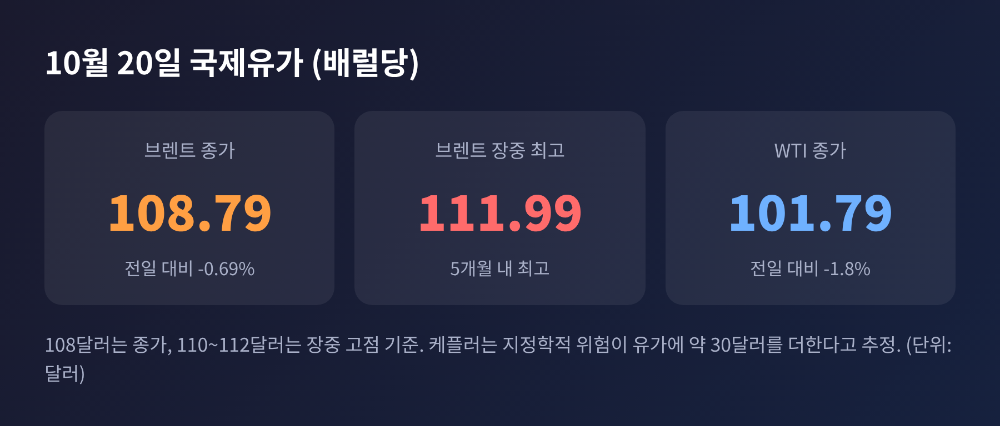
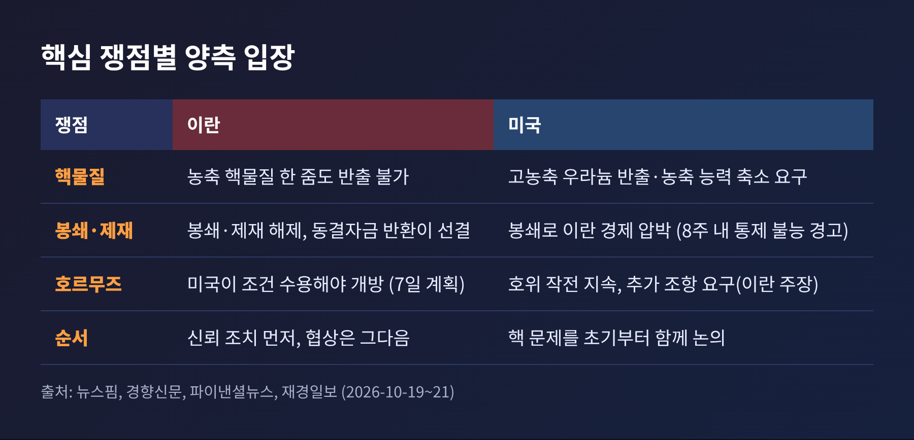
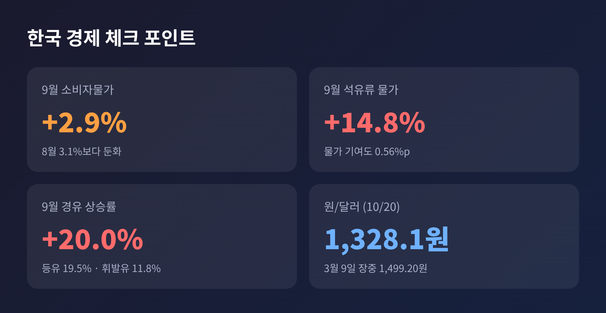

이번 글에서는 10월 중순 이후 이란의 호르무즈 해협 선박 공격이 늘어난 배경과 종전 협상이 멈춘 이유를 정리해 보겠습니다. 핵심은 두 가지입니다. 공격은 늘었고, 협상 쟁점은 순서 문제로 좁혀졌습니다. 그 사이 브렌트유는 10월 20일 종가 기준 배럴당 108.79달러를 기록했습니다.
10월 14일 로이터는 이란 고위 관계자 2명의 말을 인용해, 이란이 통항 제한을 어겼다고 판단한 선박에 대한 공격 방식과 속도를 바꿨다고 전했습니다. 결정은 최고위 지도부 수준에서 내려졌다고 합니다. 최근 48시간 동안 해협 인근에서 유조선과 상선을 노린 사건이 최소 5건 있었고, 이는 전쟁 발발 이후 최고치였습니다.
이후 흐름은 이렇습니다.

10월 17일에는 혁명수비대가 초대형 유조선이 기뢰에 걸려 불탔다고 발표했습니다. 20일에는 해협 남쪽에서 유조선 3척이 기뢰와 충돌했다고 밝혔습니다. 이란은 통과가 금지된 기뢰 부설 구역을 지났기 때문이라는 입장입니다. 영국 해사무역기구(UKMTO)에 따르면 10월 들어 18일까지 23척이 공격을 받았습니다. 이란은 선박의 기관실을 집중적으로 노려 운항을 멈추게 하고 있다고 보도됐습니다.
다만 공격 건수는 집계마다 다릅니다. 몇 가지를 나란히 놓아 보겠습니다.

기준 기간과 정의가 다르기 때문입니다. UKMTO도 대부분의 선박이 사고를 신고하지 않아 정확한 집계가 어렵다고 밝혔습니다. 숫자 하나에 매달리기보다 "20~30건 안팎, 3월 이후 가장 잦은 달"이라는 방향을 읽는 편이 안전합니다.
10월 20일 브렌트유는 장중 111.99달러까지 올라 5개월 내 최고를 기록했다가, 종가는 108.79달러였습니다. 전날보다 0.69% 내린 값입니다. 21일 이른 시간에는 109.64달러로 다시 올랐습니다. 서부텍사스산원유(WTI)는 20일 종가가 101.79달러였습니다.
보도마다 "108달러", "110달러 넘어", "112달러 근접"으로 표현이 다른 것은 기준 시점이 달라서입니다. 종가와 장중 고점의 차이입니다. WTI는 11월물에서 12월물로 넘어가는 시기라 호가가 3달러가량 갈리기도 했습니다.

한 가지 눈여겨볼 대목이 있습니다. 케플러의 중동 에너지 책임자는 지정학적 위험과 추가 운송비가 현재 유가에 배럴당 약 30달러를 더하고 있다고 추정했습니다. 원유가 모자란 것이 아니라, 옮기는 길이 비싸졌다는 뜻입니다.
월스트리트저널이 케플러 자료를 인용해 전한 내용도 비슷합니다. 10월 18일로 끝나는 주의 중동 원유 생산은 하루 약 2,400만 배럴로 전쟁 전 2,300만 배럴을 웃돌았습니다. 호르무즈 경로 물량도 전쟁 전의 약 82%인 1,400만 배럴 수준이었습니다. 미국의 호위 아래 유조선이 추적 장치를 끄고 위험 해역을 건너, 오만 인근에서 큰 배로 옮겨 싣는 방식이 가동되고 있기 때문입니다. 대신 중동에서 중국까지 초대형 유조선 운임은 배럴당 약 37.37달러로 사상 최고 근처이고, 전쟁 위험 보험료는 선가의 3% 미만에서 최대 10%까지 뛰었습니다.
예전엔 "물량이 막힐까"가 걱정이었습니다. 지금은 "물량은 흐르되 얼마나 비싼가"가 문제입니다.
이란은 9월 유엔 총회 즈음에 이른바 '7일 계획'을 미국에 제안했습니다. 미국이 조건을 받아들이면 6일째에 해협을 다시 열고, 7일째에 협상을 재개한다는 구상입니다. 조건은 해상봉쇄 해제, 동결자금 반환, 이란산 원유 제재 해제, 모든 전선의 전투 중단으로 보도됐습니다.
아라그치 외무장관은 10월 20일 이라크 방송 인터뷰에서, 미국이 이란의 조건을 수용해야 선박이 지나갈 수 있고 합의 전까지 해협은 닫혀 있다고 말했습니다. 미국이 계획에 동의 의사를 보였지만 추가 조항을 요구했다고도 했습니다. 다른 사안을 논의하기 전에 미국이 기존 이슬라마바드 양해각서의 약속부터 이행해야 한다는 주장입니다. 미국 정부가 이 설명을 공식 확인했다는 보도는 찾지 못했습니다.

핵물질 문제에서 간극이 가장 큽니다. 레자이 이란 최고국가안보회의 사무총장은 20일 파키스탄 육군참모총장 아심 무니르를 만나 농축 핵물질은 한 줌도 반출될 수 없고, 미국이 신뢰 구축 조치를 하기 전에는 협상도 없다고 말했다고 이란 국영방송이 전했습니다. 반면 트럼프 대통령은 이란이 핵무기를 가져선 안 된다며 고농축 우라늄 반출을 요구하고 있습니다. 밴스 부통령도 이달 초 우라늄 농축 능력을 의미 있는 수준으로 줄여야 한다고 밝혔습니다. 미국은 협상 초기부터 핵 문제를 함께 다뤄야 한다는 입장입니다.
정리하면 이란은 "봉쇄와 제재를 먼저 풀어 달라, 핵은 그다음"이고, 미국은 "핵 문제를 같이 풀어야 한다"입니다. 베선트 재무장관은 봉쇄로 지금 바다 위에 이란산 석유가 없고 8주 안에 이란 경제가 통제 불능이 될 것이라고 경고했습니다. 봉쇄를 지렛대로 쥔 쪽과 해협을 지렛대로 쥔 쪽이 서로 먼저 움직이라고 요구하는 구도입니다.
여기에는 해석이 갈립니다. 이란 측의 공식 설명은 통항 제한을 어긴 선박을 단속한다는 것입니다. 반면 워싱턴포스트와 로이터가 익명의 이란 관리들을 인용해 전한 분석은 다릅니다. 11월 3일 미국 중간선거 전까지 유가를 높여 트럼프 대통령을 압박하고, 외교 성과를 주지 않으려 협상을 늦춘다는 것입니다. 선거 뒤에는 트럼프 대통령이 고유가에 덜 민감해질 것이라는 계산이 있다고 합니다. 일부 외교관은 1979~80년 인질 사태가 카터 대통령의 재선에 미친 영향에 빗대기도 했습니다.
이 분석은 모두 익명 소식통의 해석이라는 점을 감안해야 합니다. 이란 정부가 확인한 내용이 아닙니다.
이란 사정도 녹록지 않습니다. 9월 소비자물가 상승률이 73.6%에 달했고, 리알화는 7월 해상봉쇄 재개 이후 달러 대비 약 35% 하락했다고 합니다. 서방 외교관은 공격 확대가 종전 협상의 지렛대를 되찾으려는 시도라고 봅니다. 미국 쪽에서는 매일 전투기와 드론, 특수부대를 동원한 호위 작전을 이어 가고 있습니다. 레자이는 이를 '밀수'라고 비난하며 전면전이 재개되면 데이터센터와 해저 케이블도 사정권이라고 위협했습니다.
이란은 사우디아라비아와 예멘 후티 반군 사이 교전을 중재하겠다고 나섰습니다. 아라그치 장관은 지금까지 어느 쪽에서도 답을 받지 못했다고 말했습니다. 예멘 외무장관은 이란이 후티를 지원한다며 제안을 거부했습니다. 이란은 후티의 사우디 공격에 관여하지 않았다는 입장입니다.
전선은 넓어지고 있습니다. 후티는 사우디 석유 시설과 공항 공습을 강화했고, 사우디 주도 연합과 서로 공격을 주고받고 있습니다. 이집트의 시시 대통령은 요청이 있으면 사우디를 방어하겠다고 했고, 이집트 의회의 관련 표결은 10월 26일로 미뤄졌습니다. 미국에서는 후티 거점에 대한 직접 개입을 신중히 검토 중이라는 관측도 나옵니다. 파키스탄과 카타르를 통한 간접 협상 통로는 아직 열려 있습니다.
한국은 원유를 거의 전량 수입하고, 그중 약 70%가 중동산입니다. 3월 기사 기준이라 현재 수치는 다를 수 있습니다. 10월 지표로 보면 국가데이터처가 발표한 9월 소비자물가는 전년 대비 2.9%로 8월의 3.1%보다 낮아졌습니다. 그러나 석유류는 14.8% 올라 전체 물가를 0.56%포인트 끌어올렸습니다. 경유 20.0%, 등유 19.5%, 휘발유 11.8%였습니다.

환율은 상대적으로 안정적입니다. 10월 20일 원/달러 환율은 서울 주간 종가 기준 1,328.1원이었습니다. 유가가 100달러를 처음 넘던 3월 9일 장중 1,499.20원까지 갔던 것과 비교하면 압력은 크게 줄었습니다.
물론 안심할 수는 없습니다. 미국 정제유 재고가 5년 평균보다 약 12% 낮아, 원유가 내려도 경유 가격은 높게 유지될 수 있다는 분석이 있습니다. 10월 물가에 이번 급등이 어떻게 반영될지는 아직 확인되지 않았습니다.
단기 전망은 소스마다 비슷합니다. 로이터가 인용한 분석가들은 이란이 중간선거 전 공격을 더 확대할 수 있다고 봅니다. 트럼프 대통령은 11월 3일 이전에는 이란을 다시 폭격하지 않겠다고 밝혔고, 미국은 직접 공습 대신 해상봉쇄 강화와 제재 확대, 후티 대상 타격으로 대응할 가능성이 크다는 관측이 나옵니다. 한편 CBS는 백악관과 국방부가 명령이 떨어지면 쓸 대형 폭탄 계획을 준비했다고 보도했습니다. 백악관은 "모든 선택지가 테이블 위에 있다"고 답했습니다.
변수는 세 가지입니다. 하나는 7일 계획에서 미국이 요구한 추가 조항의 내용입니다. 둘째는 10월 26일 이집트 의회 표결과 후티 전선의 확산입니다. 셋째는 선거 이후 양측의 계산이 바뀌는지입니다. 이란 일부 인사들은 폭격 재개가 시간문제라고 본다고 전해집니다.
정리하면 이렇습니다. 지금의 고유가는 원유가 부족해서가 아니라, 길이 위험해지고 협상이 멈춘 값입니다. 해협 밖에서는 물량이 흐르지만 비용은 천천히 가라앉기 어렵습니다.
"봉쇄가 먼저냐, 핵이 먼저냐" — 이 순서 문제가 풀리기 전까지 유가의 위험 프리미엄은 쉽게 사라지지 않을 것으로 보입니다. 11월 3일 이후 어느 쪽이 먼저 움직일지, 계속 지켜볼 일입니다.